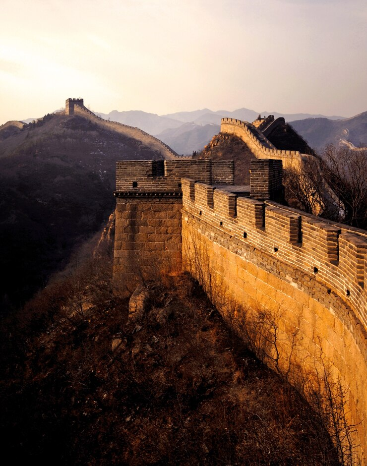

Великая Китайская стена — одно из самых известных и величественных сооружений в мире, символ Китая и важное историческое наследие. Она представляет собой сеть укреплений, которые протянулись на тысячи километров через северный Китай, от восточного побережья до пустыни Гоби на западе. Стена была построена для защиты китайских империй от вторжений кочевых племён с севера, таких как хунну, монголы и другие. Строительство стены началось ещё в VII веке до н. э. в период "воюющих царств", но её самые значительные участки были возведены в период династии Мин (1368–1644 гг.), когда Стена приобрела свой нынешний облик. Великая стена имеет длину более 21 000 километров, что делает её одним из самых длинных строительных объектов в истории человечества. Стена состоит из различных типов сооружений, включая каменные и кирпичные укрепления, стены, башни для наблюдения, ворота и бойницы. В некоторых местах стена строилась на труднопроходимых участках гор и пустынь, что делает её архитектурным чудом. Одной из целей Стены было не только физическое блокирование вторжений, но и контроль за торговыми путями, особенно в рамках Великого Шёлкового пути, а также поддержание порядка на границах. Стена также использовалась как оборонительная линия для быстрого передвижения войск, а башни, расположенные вдоль неё, служили для сигнализации о приближении врагов, а также для хранения припасов и оружия. Сегодня Великая Китайская стена является одним из самых популярных туристических объектов, привлекая миллионы посетителей со всего мира. Наиболее посещаемые участки находятся недалеко от Пекина, такие как Бадалин и Мутянью, где Стена была хорошо восстановлена и открыта для туристов. Однако есть и менее посещаемые участки, где Стена сохранилась в более природном, неотреставрированном виде, и они также привлекают любителей приключений и истории. В 1987 году Великая Китайская стена была включена в список Всемирного наследия ЮНЕСКО, и сегодня она считается одним из самых величественных памятников человеческого гения и амбиции, отражающих мощь и стратегический взгляд на защиту древнего Китая.
 Запретный город (или Гугун) — это знаменитый императорский дворец в Пекине, Китай, который служил резиденцией китайских императоров на протяжении более 500 лет, с 1420 года, когда началось его строительство, до 1912 года, когда династия Цин была свергнута. Запретный город является одним из самых больших дворцовых комплексов в мире и является символом власти, величия и закрытости китайской императорской системы. Название "Запретный город" происходит от того, что вход в этот дворец был строго ограничен. Только император, его семья и высокопоставленные чиновники могли войти, а простым людям было запрещено заходить на территорию.
Комплекс состоит из около 980 зданий, включая дворцы, храмы, залы и дворы, которые расположены на территории в 720 000 квадратных метров. Запретный город был построен в традиционном китайском архитектурном стиле, с яркими красными стенами и жёлтыми крышами, что символизирует императорскую власть и богатство. Стены комплекса окружены глубокими рвами и высокими стенами, и сами здания разделены на несколько дворов, каждый из которых имел своё предназначение. Центральная часть комплекса предназначалась для императорской семьи, а задняя часть использовалась для служебных и административных нужд.
Запретный город олицетворяет не только архитектурное величие, но и китайскую философию. Он построен с точностью в соответствии с принципами фэншуй и китайской космологии, где каждый элемент имеет глубокий символический смысл, отражающий баланс и гармонию вселенной. Составленные с учётом космических принципов, эти здания символизируют место, где Земля встречается с небом, а император считается связующим звеном между людьми и небесными силами.
После свержения императорской династии в 1912 году, Запретный город был преобразован в музей, известный как **Музей дворца**, который открывается для публики с 1925 года. Сегодня это одна из самых посещаемых туристических достопримечательностей Китая и объект Всемирного наследия ЮНЕСКО, привлекающий миллионы туристов ежегодно. В музее хранятся коллекции китайского искусства, древние артефакты, картины, керамика и другие ценности, представляющие культурное наследие Китая.
Запретный город (или Гугун) — это знаменитый императорский дворец в Пекине, Китай, который служил резиденцией китайских императоров на протяжении более 500 лет, с 1420 года, когда началось его строительство, до 1912 года, когда династия Цин была свергнута. Запретный город является одним из самых больших дворцовых комплексов в мире и является символом власти, величия и закрытости китайской императорской системы. Название "Запретный город" происходит от того, что вход в этот дворец был строго ограничен. Только император, его семья и высокопоставленные чиновники могли войти, а простым людям было запрещено заходить на территорию.
Комплекс состоит из около 980 зданий, включая дворцы, храмы, залы и дворы, которые расположены на территории в 720 000 квадратных метров. Запретный город был построен в традиционном китайском архитектурном стиле, с яркими красными стенами и жёлтыми крышами, что символизирует императорскую власть и богатство. Стены комплекса окружены глубокими рвами и высокими стенами, и сами здания разделены на несколько дворов, каждый из которых имел своё предназначение. Центральная часть комплекса предназначалась для императорской семьи, а задняя часть использовалась для служебных и административных нужд.
Запретный город олицетворяет не только архитектурное величие, но и китайскую философию. Он построен с точностью в соответствии с принципами фэншуй и китайской космологии, где каждый элемент имеет глубокий символический смысл, отражающий баланс и гармонию вселенной. Составленные с учётом космических принципов, эти здания символизируют место, где Земля встречается с небом, а император считается связующим звеном между людьми и небесными силами.
После свержения императорской династии в 1912 году, Запретный город был преобразован в музей, известный как **Музей дворца**, который открывается для публики с 1925 года. Сегодня это одна из самых посещаемых туристических достопримечательностей Китая и объект Всемирного наследия ЮНЕСКО, привлекающий миллионы туристов ежегодно. В музее хранятся коллекции китайского искусства, древние артефакты, картины, керамика и другие ценности, представляющие культурное наследие Китая.